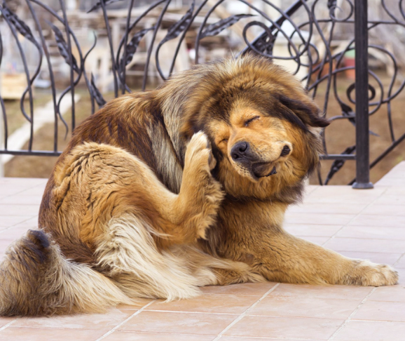

Mi perro tiene pulgas: ¿Qué hago?
Las pulgas son un parasito habitual de nuestras mascotas. Puede parecer un tema difícil de solucionar, aunque con una detección temprana de estos parásitos conseguirás que nuestro amigo de cuatro patas no sufra tanto.
Para crecer y reproducirse, las pulgas necesitan un ambiente cálido y húmedo. Una pulga adulta puede vivir hasta 115 días parasitando un perro, mientras que aislada sobrevive solamente uno o dos días. Es importante que, una vez realizada la desparasitación, realices una correcta fumigación de tu casa.Dicho esto, la mejor forma de quitar las pulgas es:
• Bañar a tu mascota con un shampoo antipulgas. Verás al rato de haberlo bañado, que las pulgas comienzan a caerse solas. Esta manera es eficaz pero no preventiva. Bastará con que suba una nueva pulga y contagie a tu mascota de nuevo.
• Complementando el baño, la mejor forma para quitar pulgas es la desparasitación externa e interna. Existen pastillas o pipetas tópicas. Este método tiene una duración de 1 a 3 meses, dependiendo lo que compres.
Controlando mensualmente a tu mascota, siguiendo la desparasitación y control de pulgas, prevenis que tu perro se contagie de estos parásitos que tanto dolor de cabeza traen.
Todos los tips para cuidar a las mascotas ante las altas temperaturas y la ola de calor

El verano y el calor, cada año que pasa, viene mas fuerte. Esto puede ser un problema para los humanos y las
mascotas del hogar. En especial para los perros, ya que no cuentan con glándulas sudoríparas. Su única manera de
regular la temperatura corporal es mediante el jadeo y la eliminación del sudor por las almohadillas de sus
patas.
Ante un posible golpe de calor, lo importante es mantener la calma mientras se resuelve la ida al
veterinario.
Podes ayudar a tu mascota siguiendo estos pasos:
• Lo primero y urgente como objetivo, es hacer que su temperatura corporal baje. Se puede mojar al animal
con
agua (ni fría ni caliente). Un shock de agua helada o uso de cubitos de hielo puede ser contraproducente.
• Mantenerlo hidratado suavemente. Ni muy rápido ni mucha cantidad, esto es para que sus niveles de
hidratación vuelvan a la normalidad de a poco.
Luego de atacar lo urgente, debes llevar a tu mascota al veterinario. Así controla que este fuera de peligro.
En épocas de temperaturas muy altas, es mejor tener varios tachos con agua distribuidos por la casa. Lo mismo
para sus paseos, es mejor que tu perro salga a realizar sus paseos por la mañana bien temprano o por las noches,
cuando el sol ya no esta tan fuerte.
10 Alimentos que son dañinos para tu perro
 Es muy importante que no te dejes convencer por tus mascotas, hay muchos alimentos que están en casa que pueden
intoxicarlos.
Es muy importante que no te dejes convencer por tus mascotas, hay muchos alimentos que están en casa que pueden
intoxicarlos.
Hay que mantener cualquier tipo de alimento fuera de su alcance.
A continuación, te dejamos 5 alimentos que ningún animal puede ingerir:
•Alcohol.
La ingesta de alcohol hará que tu mascota actúe ‘borracho’. Pero ellos no pueden tolerar y procesar esta sustancia de la misma manera que los seres humanos pueden. Los signos de intoxicación por alcohol incluyen vómitos, diarrea, desorientación, temblores y coma.
•Ajos y cebollas.
Si tu perro ingiere de cebollas, chalotas, cebollinos, cebolletas o ajo hace que el cuerpo de un perro destruya sus glóbulos rojos, lo que conduce a la anemia.
•Carne cruda.
La carne cruda a menudo está contaminada con bacterias como salmonela, E. Coli, toxoplasmosis u otros patógenos dañinos. Estas bacterias pueden traerle grandes complicaciones a tus mascotas.
•Chocolate y café.
Tanto el chocolate como la cafeína contienen sustancias llamadas metilxantinas que son muy peligrosas para los perros. Estas sustancias pueden causar vómitos, diarrea, hipertermia (alta temperatura corporal), ritmos cardíacos anormales, temblores y convulsiones.
•Uvas y pasas.
Las uvas y pasas pueden resultar muy tóxicas para el perro, incluso en las cantidades más pequeñas pueden provocar fallo renal.